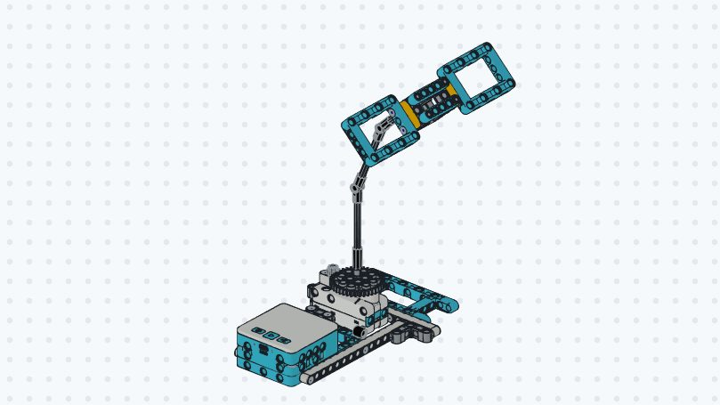

1. Bộ tiêu chí chấm sao (1–5 tiêu chí, thang 1–3 sao)
BR-TB-07: Đã có lượt chấmBộ tiêu chí dùng chung cho Giáo viên, Bạn trong lớp và Khách (GD-18). Theo luật BR-TB-07, chỉ sửa được tiêu chí khi buổi chưa có lượt chấm nào.
Bộ tiêu chí dùng chung cho Giáo viên, Bạn trong lớp và Khách (GD-18). Theo luật BR-TB-07, chỉ sửa được tiêu chí khi buổi chưa có lượt chấm nào.
Khách không cần đăng nhập và không để lại tên. Mỗi tờ phiếu có mã 8 ký tự riêng (bỏ 0/O, 1/I/l). Thu hồi phiếu sẽ ẩn ngay các lượt chấm của phiếu đó khỏi điểm trung bình (6.4) và bảng xếp hạng (6.6).
Sao và câu mẫu hiện ngay cho nhóm. Chữ do khách tự gõ (tối đa 200 ký tự) phải được giáo viên duyệt mới hiện ở mục "Mọi người nói gì" của nhóm và phụ huynh.
Sao của các bạn và khách chỉ để tham khảo, không gộp chung 3 nguồn. Khi lưu đánh giá nhóm, hệ thống chép mức (HTT / HT / CHT) và nhận xét cho 4 thành viên trong nhóm.
| Nhóm & Thành viên | Trạng thái | TB Bạn (6.4) | TB Khách (6.4) | Sao GV (GD-21) | Đánh giá chính thức (F-06) |
|---|


Còn nhận xét của khách đang ở trạng thái Chờ duyệt. Nếu đóng buổi ngay, các nhận xét này vẫn chưa hiển thị cho học sinh và phụ huynh.